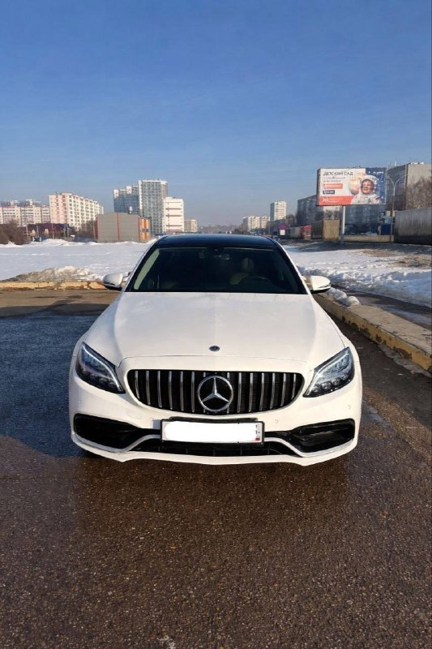
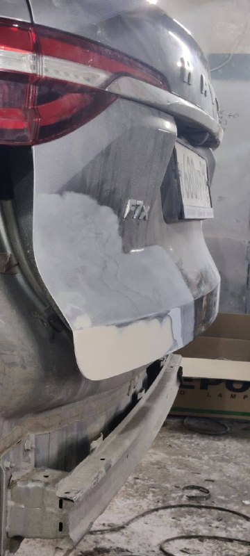
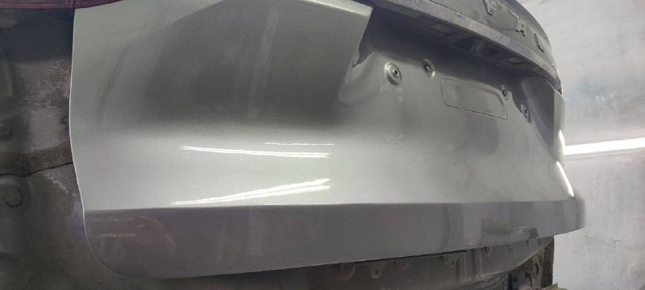

Mercedes C43
Ремонт и покраска капота и крыла. Покраска нового переднего бампера.



Набережные Челны
Ремонтируем кузов, красим автомобили и детали, выполняем полировку.
Центральная, 72А · посёлок ГЭС
Работы Work Style
Ремонт и покраска капота и крыла. Покраска нового переднего бампера.

Ремонт крышки багажника и установка нового окрашенного заднего бампера.


Услуги
Контакты